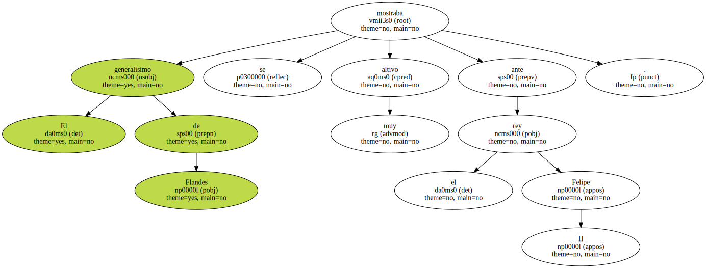

Antes de nada : amo , admiro y respeto a Cayetana de Alba.
Ha llevado con empaque su ducado , a la sombra de Durero , y era duquesa de fallera , duquesa montando a caballo , duquesa , la gran duquesa , en su Palacio de las Dueñas o en las coronaciones o fastos reales , o arrancándose a bailar sevillanas , con duende , en las albas de aguardiente.
Ella , como los otros miembros de la nobleza española , no es culpable de que no hubiera nunca una guillotina en la Plaza Mayor o de que los jornaleros no impusieran con las horcas y el hambre la reforma agraria.
Ni sus diez palacios , ni sus mil fincas , ni su condición de emperatriz del latifundio , la convierten en la representante del feudalismo.
Al contrario : es campechana y castiza como una ventera y ha conseguido huir de los cretinos de la jet o de los rancios representantes de la nobleza reaccionaria.
Nació , vivió y maduró con la majeza que suelen las verdaderas princesas y arrancó su libertad personal y una rara heterodoxia de un entorno rentista y estúpido.

El pueblo en España se entendió mejor con los aristócratas que con sus capataces.
Los capataces y los señoritos fueron los que rejonearon rojos cuando la guerra civil.
La Duquesa de Alba ha buscado para confortarse en su glorioso otoño a un poeta.
En eso se parece al Duque de Alba , aquel guerrero que antes de dar nombre al coñac , en la marcha hacia Bruselas fue cortando cabezas y cuando llegó a Flandes colgó a los primeros abertzales del imperio del Sol.
El generalísimo de Flandes se mostraba muy altivo ante el rey Felipe II.
De su antepasado , Cayetana ha heredado la piedad de rodearse de poetas religiosos , puesto que el de Flandes frecuentó a Fray Luis de Granada.
Ella vivió con la cabeza alta ante el Generalísimo , que jamás pisó el Palacio de Liria.

Luego , después de una viudez en la que derramó muchas lágrimas sinceras por su esposo muerto , en vez de asistir a los tablaos , iba a las tertulias de intelectuales.
Cuentan los bribones de la ciudad que después de beber una botella de ginebra con Cayetana , el que la acompañaba , la insultó : - Tú sólo frecuentas banderilleros y bailaores maricas.